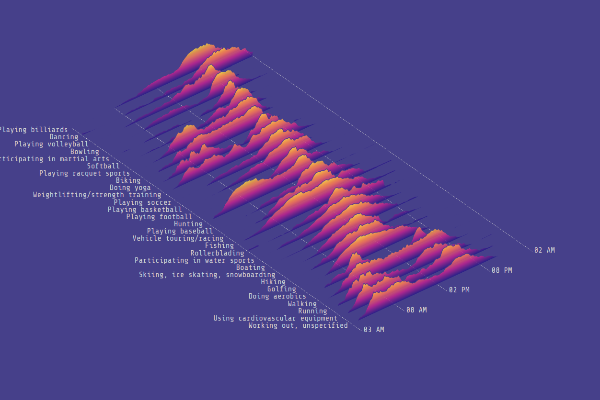
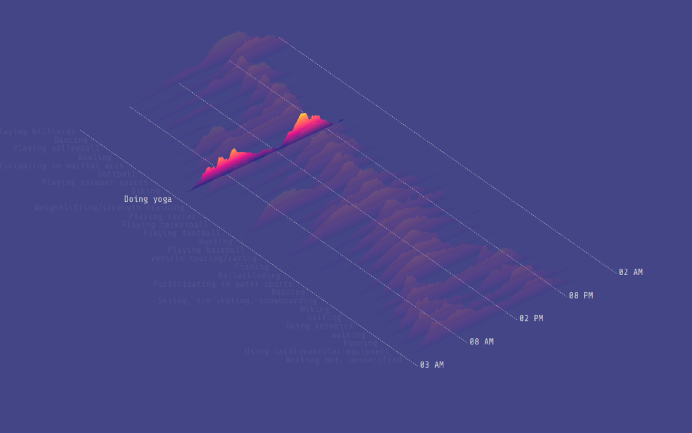
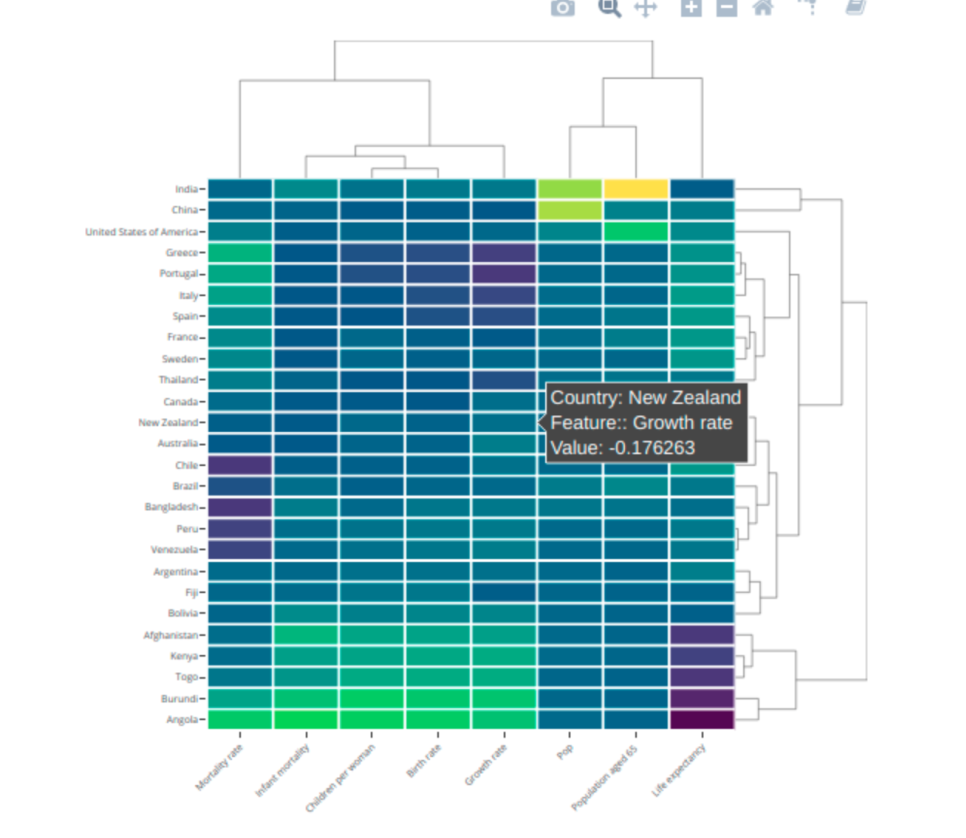

The research question I tried to visualize was how much confidence different countries have in a number of organizations (http://www.worldvaluessurvey.org/WVSDocumentationWV6.jsp).
To visualize the data I aimed to create an interactive ridgeline where each country was shown on the y-axis, time span on the x-axis, and the confidence value on the transformation on each country’s ridgeline graph. I aimed to add interactions for hovering to show the exact value and a selection to choose between organizations (Figure 1).


Being a rookie in using D3.js, HTML, and working with big data sets, generated a learning curve to get up to speed, which unfortunately hindered me from finishing all tasks for Project 2 on time. I simplified my project to just show countries and level of confidence in a static ridgeline where the specific year-waves and organizations should be selected by the user. Still, I am here with a few hours before the deadline doing my best to solve the last bugs hindering the data to be visualized in the graph.
In hindsight, the best plot to show 30+ countries and 8+ variables over 20+ years would have been an interactive heatmap as shown in Figure 2.

Figure 2: Interactive Heatmap